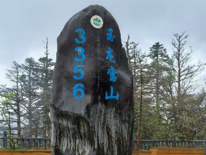
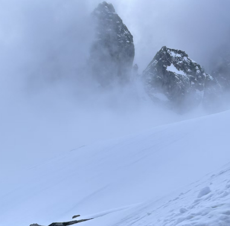
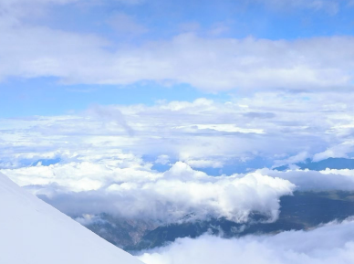
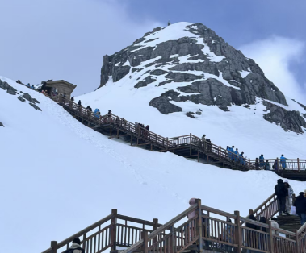

我的旅行
探索中国，领略祖国风光


丽江行

初临雪山
清晨，我和朋友从丽江古城出发，乘坐的大巴车沿着蜿蜒的山路前行，玉龙雪山在纳西语中被称为“欧鲁”，意为银色的山岩，传说它是纳西人的神山，是“三多”的化身。随着海拔的升高，远处的玉龙雪山逐渐清晰起来，十三座雪峰连绵不绝，宛如一条“巨龙”腾越飞舞，气势磅礴。

索道上行
我们乘坐的索道是目前我国海拔最高的客运索道，全长2914米，垂直高差1150米。缆车缓缓上升，窗外的景色从郁郁葱葱的山林逐渐变为银装素裹的雪山。云海在脚下翻腾，时而淡抹浅妆，时而银涛滚滚，仿佛置身于仙境之中。

登顶冰川公园
经过大约十几分钟的行程，缆车到达了海拔4506米的冰川公园。走出缆车，一股寒冷的空气扑面而来，我赶紧穿上厚厚的羽绒服，拿起氧气瓶，开始沿着栈道向更高处攀登。虽然每走几步就会气喘吁吁，但沿途的美景让我忘却了疲惫。终于，我登上了海拔4680米的高峰，远处的雪山连绵起伏，在阳光的照耀下闪耀着金色的光芒，让人不禁感叹大自然的鬼斧神工。

探秘蓝月谷
从冰川公园下来后，我们乘坐景区大巴前往蓝月谷。蓝月谷的湖水在阳光的照射下呈现出浅蓝、翡翠绿、乳白等多种颜色，宛如一块巨大的宝石镶嵌在雪山脚下。湖水清澈见底，湖底的岩石和树木清晰可见，与周围的雪山、森林相互映衬，构成了一幅如诗如画的美景。